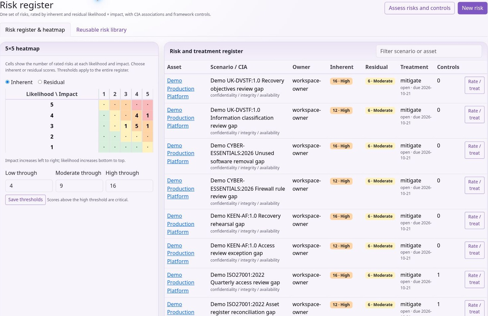
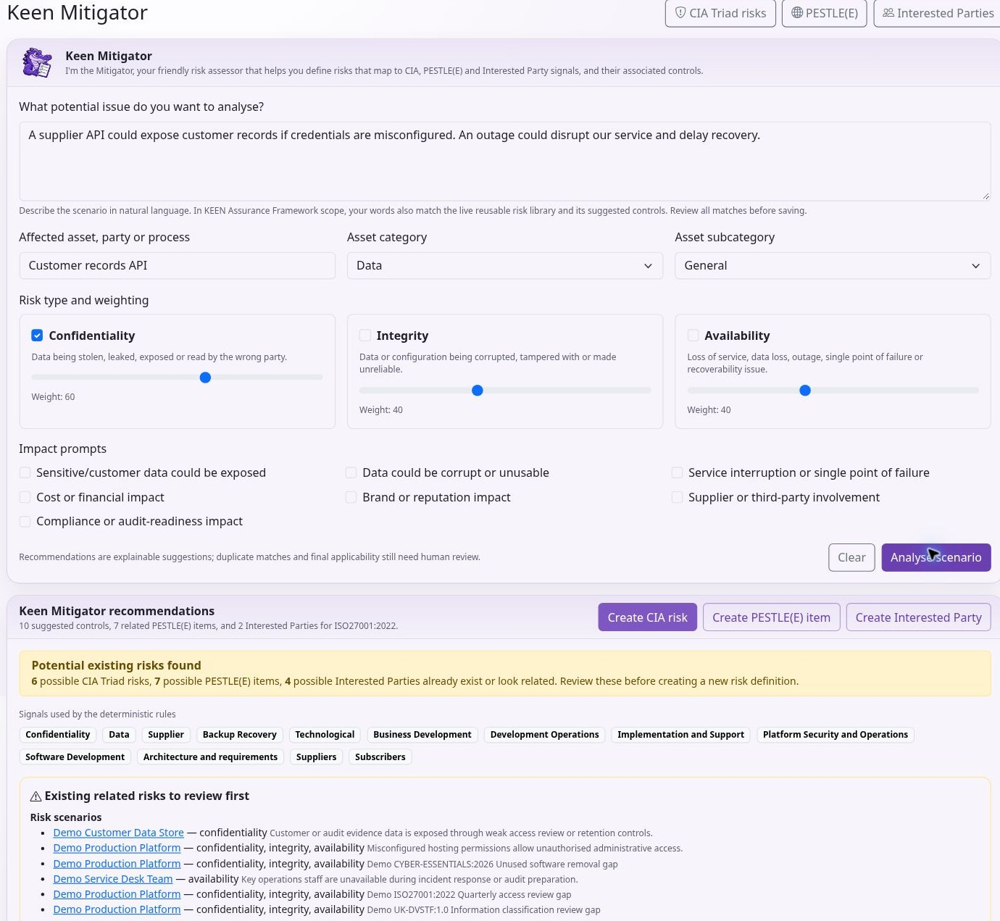

Using KEEN
Risks, treatments and ownership
Chapter 7 of 15
Assess and treat risks
Assess and maintain risks
KEEN uses one set of risk scenarios across the risk editor, register and heatmap. A risk can be associated with confidentiality, integrity and availability (CIA), an asset, categories, an owner, treatment information and controls from relevant frameworks.
Use Risks to create or edit a scenario. Describe the threat and business context, select or create the relevant asset, set its CIA associations and assign an owner. Review the applicable controls. Keep the scenario specific enough to support a treatment decision; avoid creating several indistinguishable risks for the same situation.
Rate inherent likelihood and impact before treatment, then residual likelihood and impact after the intended treatment. Each rating is 1–5 and the corresponding score is likelihood × impact. The same ratings appear in the editor, register and heatmap. Record the treatment strategy, status, plan and due date so a lower residual score has an explanation.
The register’s thresholds classify scores. Default maximums are 4 for low, 9 for moderate and 16 for high; scores above the high threshold are critical. Threshold changes apply across the register. Agree the scoring method before changing them, and distinguish an unrated risk from a low risk.
Use the reusable risk library

Open the Risk register and find Reusable risk library. Choose a scenario to start a new assessment. KEEN fills the description, CIA tags, treatment guidance and available suggested assessment fields. Review the suggested asset and example ratings, set the actual owner and treatment, and save the risk for your organisation.
The supplied library integrates with the KEEN Assurance Framework. Templates can suggest KEEN-AF control references; when creating the risk, valid remaining references are linked under KEEN-AF:1.0 even if another framework is currently selected. Links for other frameworks remain separately manageable. Check implementation evidence for each suggested control.
To reuse your own scenario, select a risk in the register and choose Save scenario to library. Use a general scenario name and remove customer-specific or personal details from reusable text. Reuse creates an independent assessment to review and maintain.
Risk register exchange and the Mitigator
Export the current register as CSV when you need an external review. Import creates new scenarios. Edit existing records through the risk editor. Start with an exported header, use the current column names and choose the intended framework for control references. The import accepts up to 1,000 rows and 2 MB and rejects the whole file if a row fails validation. Review ownership, scores and control references before importing to avoid duplicates.
The KEEN Mitigator suggests controls using scenario categories, CIA associations and other assessment inputs. Use those suggestions alongside the library and your own analysis. Review suggested relationships against your own assessment and remove irrelevant ones.
Assess a risk through to treatment
The Risk register & heatmap tab shows your current risks and their ratings. Open the Reusable risk library tab to browse suggestions and add relevant risks to your register. Bulk import and export tools are available in the expandable section below the register.

- Open Risks to create a scenario, or choose Use template in the Risk register’s reusable library. Describe the threat, affected asset and business consequence. Avoid making the entire assessment just a label such as “cyber risk”.
- Select the asset, category and subcategory, relevant confidentiality/integrity/availability associations, and an owner. CIA describes the effects of a scenario; the 1–5 ratings assess likelihood and impact.
- Rate inherent likelihood and impact before the planned treatment. Record the basis for the ratings. For example, likelihood 4 and impact 5 produce an inherent score of 20.
- Choose relevant controls and a treatment strategy. In the register, record the treatment status, plan and due date. Give the owner a concrete action and completion evidence to obtain.
- Set residual likelihood and impact to reflect the assessment after treatment. For example, 2 × 3 produces 6. Explain why the treatment changes the risk and link evidence of completed treatment.
- Review the saved risk in both the register and heatmap. Follow its controls and compare the supporting evidence with the treatment claim.
Default score bands are low up to 4, moderate up to 9, high up to 16 and critical above 16. Agree your method before changing the shared thresholds. Complete the ratings for each unrated risk before prioritising it. Review assessments when assets, threats, vendors, controls or the organisation change.
Reusable scenarios and CSV exchange
A library template supplies a starting description, CIA tags, treatment guidance and available example ratings. Review its suggested asset and assess the actual context. The supplied library includes KEEN-AF control mappings; valid template links can be added under KEEN-AF:1.0 even when another framework is selected. Other framework relationships remain separately manageable.
Use Save scenario to library from a selected register risk to contribute a reusable scenario. Generalise its wording and remove organisation-specific or personal details. Assessments remain independent when their source template is edited or deleted.
Export CSV to obtain the current headers before preparing an import. Import creates new scenarios, with a limit of 1,000 rows and 2 MB, and rejects the file when a row fails validation. Check identifiers, scores, owner details and the framework used for control references. Re-importing the same file can duplicate risks. Use the risk editor to update existing assessments.
Use the Mitigator’s suggestions
Choose the intended framework, then open KEEN Mitigator. Describe a specific potential issue in natural language and identify the affected asset, party or process. Select category and subcategory, relevant CIA associations and impact flags, then run the analysis.

In KEEN-AF:1.0 scope, the wizard also searches the current reusable risk library. It matches distinctive scenario words and configured synonyms, displays the matching terms, and uses matching templates’ KEEN-AF control references to strengthen control recommendations. This includes the extended library’s AI risks, such as prompt injection, model extraction, unapproved AI tools and excessive agent permissions. Edits to the database library and control catalogue are read on the next analysis.
- Read the detected signals. Check that they describe your concern; a keyword match can still be irrelevant or refer to something already prevented.
- Inspect the reusable library candidates and their control references. Review this template opens the normal risk editor so you can review its description and example ratings before saving. Save the reviewed assessment to create the risk.
- Review the suggested controls and remove unsuitable selections. Out-of-scope controls are labelled for review and retain their current applicability until you edit it.
- Check existing matching risks before creating another assessment. Review PESTLE(E) and Interested Party candidates separately.
- Either create a risk from your original scenario using the selected controls, or follow a library template. Review the resulting assessment, owner, likelihood, impact and treatment. Set the ratings yourself when creating a risk from your original scenario.
Try “Our staff use unapproved AI tools”, “Supplier contracts do not protect personal data”, or “We cannot restore our backups after ransomware”. Add context if the matches are too broad. The engine uses deterministic, explainable matching rules. It may match negated statements, so confirm each proposed risk against the actual scenario. Other framework scopes keep framework-specific control suggestions without importing KEEN-AF library links into their results.
Risk ownership by organisational role
A risk can belong to an individual user or an organisational role. Create roles in the ISMS organisation chart and assign users to them, then choose the role in the risk editor's Owner field. Each risk has one owner.
Users directly assigned to an owning role see its risks in My risks and receive the same risk-specific read and question access as an individual owner. Risk editing requires the usual risk-management permission. Role membership changes apply on the next access check; membership of a parent node does not grant ownership of roles below it.
Role ownership appears in the register, risk details, control associations and change history. CSV exports preserve the role identifier separately from the username. Deleting a role leaves its risks unassigned.